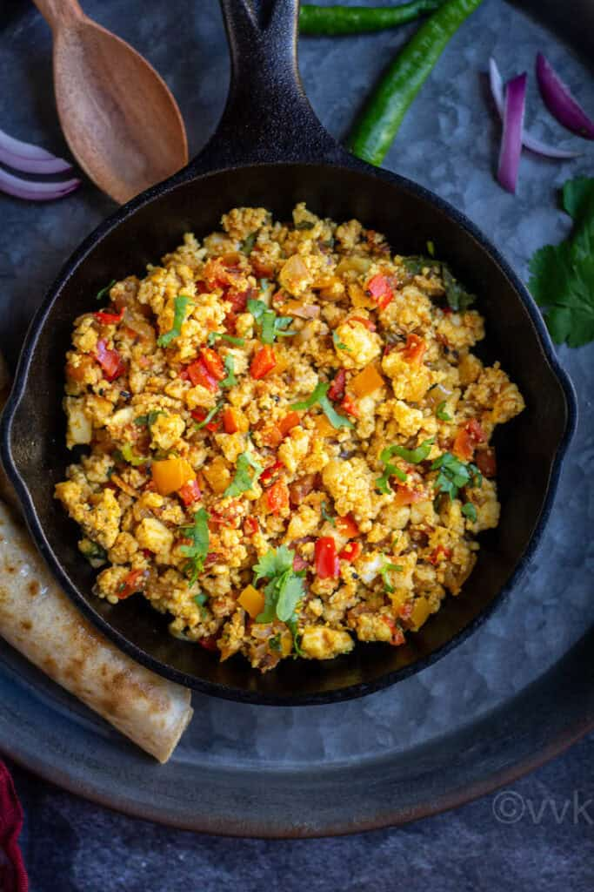
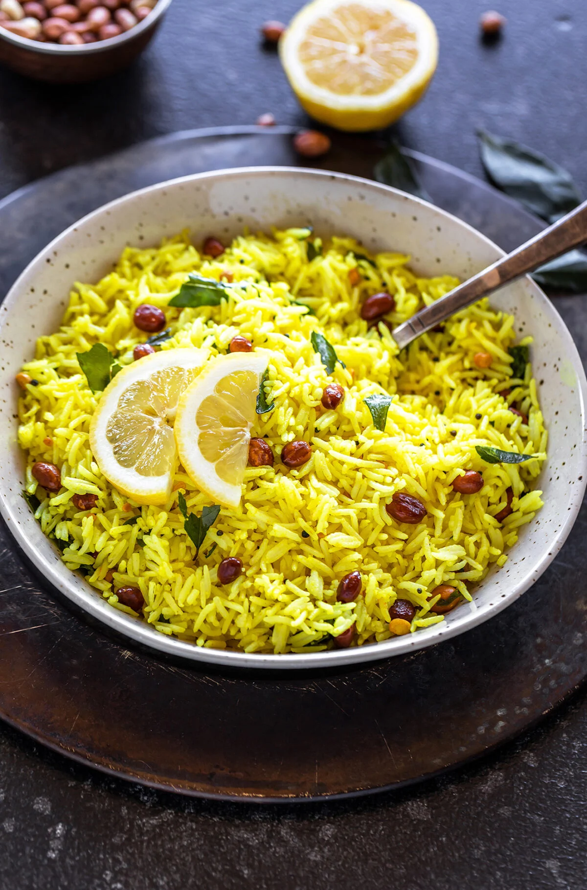

Cumin Potatoes
- 4 medium potatoes (boiled and diced)
- 1 tsp cumin seeds
- 1 tsp turmeric powder
- 1 tsp red chili powder
- 2 tbsp oil
- Salt to taste
- Fresh coriander leaves (for garnish, optional)
Ingredients
Process
- Heat oil in a pan, add cumin seeds and let them splutter.
- Add the diced boiled potatoes, turmeric, red chili powder, and salt.
- Stir well and cook for 5-7 minutes until the potatoes are golden and slightly crispy.
- Garnish with fresh coriander leaves (optional) and serve hot with roti or paratha

Scrambled Paneer
- 200g paneer (crumbled)
- 1 onion (finely chopped)
- 1 tomato (finely chopped)
- 2 green chilies (optional, finely chopped)
- 1 tsp turmeric powder
- Salt to taste
- Fresh coriander (for garnish, optional)
Ingredients
Process
- Heat oil in a pan, add cumin seeds and let them splutter.
- Add chopped onions and sauté until golden brown.
- Add tomatoes and green chilies (if using). Cook until the tomatoes soften.
- Add turmeric powder, salt, and crumbled paneer. Mix well.
- Cook for 3-4 minutes, stirring occasionally.
- Garnish with coriander (optional) and serve with bread, roti, or paratha.

Lemon Rice
- 2 cups cooked rice (cooled)
- 1 tsp mustard seeds
- 1 tbsp peanuts
- 1 green chili (slit)
- 1 tsp turmeric powder
- 1 tbsp lemon juice
- 2 tbsp oil
- Salt to taste
- Fresh coriander (for garnish, optional)
Ingredients
Process
- Heat oil in a pan, add mustard seeds and let them splutter.
- Add peanuts and green chili, sauté until peanuts turn golden brown.
- Add turmeric powder and stir for a few seconds.
- Add the cooked rice, salt, and lemon juice. Mix well until the rice is coated with the turmeric and lemon juice.
- CCook for 2-3 minutes, garnish with coriander if desired, and serve hot.
